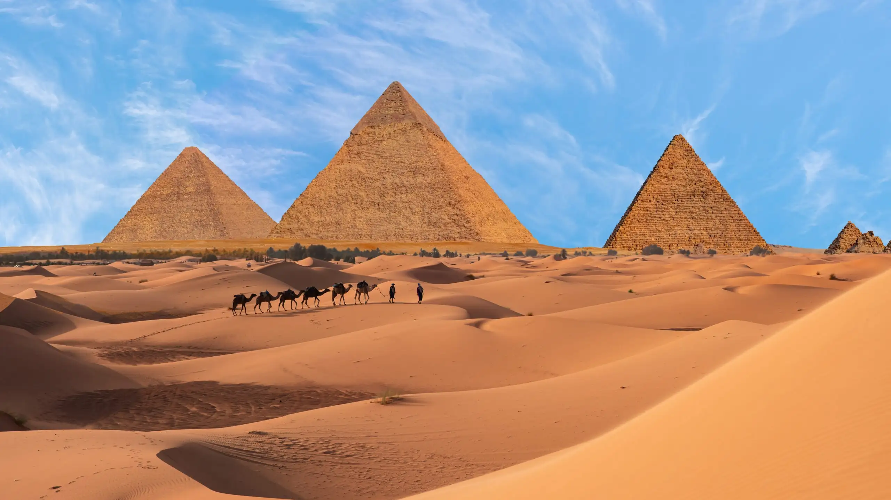

Pyramids of Giza, Egypt

This place is considered one of the seven wonders of the world and it is considered one for a reason. I do not think there's someone who can confidently explain how these pyramids are built by humans around 2600 BC. There is no technology of some sort available at that time so it would be impossible to imagine that it is built by humans. This is the reason why I want to see it with my own eyes.
Egypt is a land of ancient wonders, from the Pyramids to the Nile. Here’s how to get there: